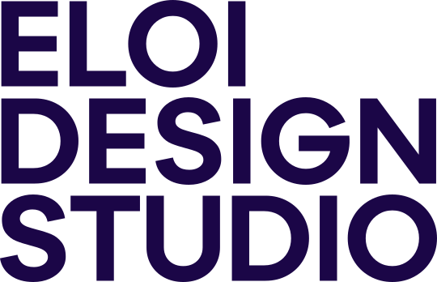

Estúdio de design · Natal/RN
Quatro formas. Uma decisão por vez.
Marcas, campanhas e sistemas para empresas que precisam se comunicar com personalidade, clareza e impacto — do briefing ao arquivo final, no mesmo estúdio.

Malha 202 · módulo 180
4 formas
Com quem trabalhamos
{{ m.nome }}
Cada forma é uma etapa do trabalho
O sistema visual não é enfeite: as quatro formas do KV são as quatro coisas que a Eloi entrega.
{{ s.forma }}
{{ s.titulo }}
{{ s.texto }}
Como funciona
Três etapas, cada uma com uma entrega nomeada. Você acompanha tudo num portal próprio — não num grupo de mensagens.
{{ e.n }}
{{ e.titulo }}
{{ e.texto }}
Próximo passo
Preencher briefing